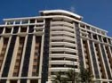
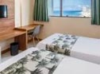
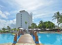
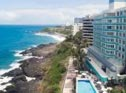

HOTÉIS

Faro Inn Hotel Salvador
4.3 - (170) avaliações
Convenientemente situado no bairro de Amaralina, em Salvador, o Rede Andrade Riviera Premium está localizado a 2,7 km da Praia Pituba, a 5 km do Shopping Iguatemi e a 6 km da Estação Rodoviária.

Rede Andrade Riviera
4.3 - (170) avaliações
Este hotel 4 estrelas à beira-mar está situado na Praia de Ondina, a apenas 2 km do Yacht Clube da Bahia. O atendimento ao cliente foi absolutamente PERFEITO. Fui recepcionada da melhor forma possível...

Vila Galé Salvador
4.3 - (170) avaliações
Situado bem em frente à Praia da Barra, o hotel 4 estrelas Rede Andrade Barra tem uma localização central e oferece vista do mar da Baía de Todos os Santos, no bairro da Barra, em Salvador...

Rede Andrade Barra
4.3 - (170) avaliações
Situado em Salvador, bem ao lado do bairro do Rio Vermelho, o Salvador Express Praia Hotel dispõe de um terraço ao ar livre com banheira de hidromassagem e vista do mar.beach and few bars around...